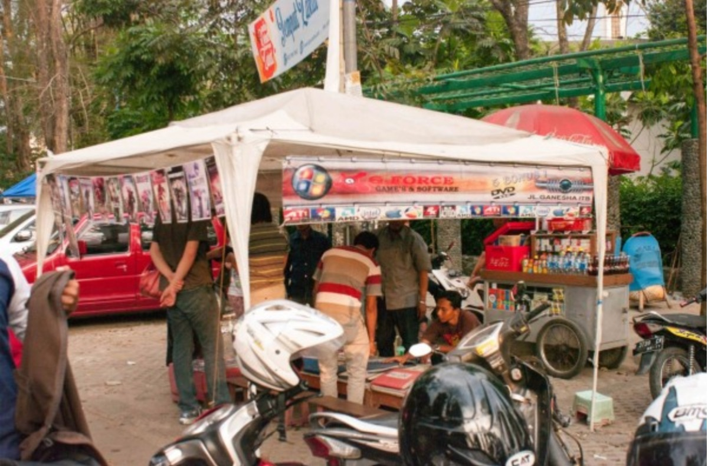

Firefox in Thailand & Indonesia

This research was led by Bill Selman & Gemma Petrie.
In Fall 2013, the Mozilla User Experience Research Team visited Thailand and Indonesia to conduct Firefox qualitative research. In addition to our team of Mozillians, we partnered with SonicRim, a global design research firm, on this research project. If you would like to learn more about the project planning phase of this study, please read the first post in this series. You can also read about our initial observations in Thailand and our initial observations in Indonesia in previous posts. Finally, you can also checkout this follow-up post on ecommerce in Indonesia.
Study Goals
The goal of this research project was to understand how people in Thailand and Indonesia experience the Internet and to learn about emerging trends that will provide insight into new and current product features for Firefox.
Research Activities
The Mozilla User Research team believes it is important to experience in-context research with a wide variety of staff members. We brought a diverse set of talents into the field with us and gave each person the opportunity to engage in cultural immersion activities and two or more qualitative interviews in Bangkok & Chiang Mai, Thailand or Jakarta & Bandung, Indonesia. Our field teams were comprised of: Bill Selman (User Research), Gemma Petrie (User Research), Uday Dandavate (SonicRim Researcher), Larissa Co (UX Design), Zhenshuo Fang (UX Design), Holly Habstritt (UX Design), Bram Pitoyo (UX Design), Margaret Schroeder (Market Research), Gavin Sharp (Firefox Engineering), and Yuan Wang (UX Design).
We engaged in a variety of contextual inquiry and ethnographic research activities including:
Semi-structured interviews with 44 participants (22 buddy pairs) in their homes and offices.
We observed public, commercial, and educational environments.
We connected with local Mozilla community members and hosted community dinners in Bangkok, Thailand and Bandung, Indonesia.
We collected over 60 hours of audio and video and nearly 2,500 photographs.
Finally, we engaged in an extended analysis period with both field teams in our Portland, Oregon office.

Results
In Indonesia and Thailand, changes are taking place with respect to how (and how many) people are accessing the Internet. Rapid technological and socioeconomic development has influenced technology adoption curves and technology-centric behaviors. Our research identified various themes that will help inform the future development of our products. Here are a few of them:
Infrastructure:
Key pieces of critical infrastructure are lagging, especially in Indonesia.1-5
Reliable telecom is unevenly distributed in both markets. Urban dwellers can’t easily connect with their rural relations (and vice versa).
Telecom infrastructure is generally lacking (though improving); Limited bandwidth is shared between a very large subscriber base.
In Thailand, data is cheap (less so, proportionally, in Indonesia). Certain kinds of data usage (like social networking) may be unlimited, while others are metered. People in both markets use multiple devices/telecom providers to maximize coverage/minimize costs.
This lack of stable infrastructure inhibits what can be done with technology and influences software adoption and software updates due to poor or nonexistent download speeds.
OS/Software Distribution:
Due to poor connectivity, downloading is often not the only software distribution channel in this region. Physical media such as DVDs and USB thumb drives still play a significant role in how software is distributed and installed. As a result, software packages are frequently installed in a shop, rather than at home. These packages can include everything from the OS, to multiple browsers, productivity tools, and games. In Indonesia, software being sold is often several versions behind the current version and may be compromised with malware.
Search & Navigation:
Participants have difficulty searching the Internet, because they don’t understand the pieces of the browser and the relationship of the browser to the Internet. This resulted in several beliefs:
The belief that Chrome is better for searching Google, because both are Google products.
The belief that search results are generated within the browser, thus searching in a different browser will produce different results.
Navigating to Google.com in order to enter Facebook.com in the Google search box.
Limited awareness that software can be customized or modified with add-ons.
Acquiring software based on popularity in their social circles rather than functionality or performance.
"It doesn’t work anymore” — There is limited knowledge of malware, malicious add-ons, etc., that may be severely impacting browsing experience
Translation:
Internet users in both markets rely on a blend of English and local language sources in order to find information they need. Users often, but not always, use English language menus on their devices (especially among Thai users trying to save screen real estate). Yet, while many users can navigate effectively in English, translation is still critical to their browsing experience. People want content in a context appropriate language: Local content in the local language and international content In English. Overall, there was a distrust of machine translations and a desire for improved content translation that provided additional cultural context.
What's Next?
Mozilla is committed to providing the best user experience possible to our global community of users. It is important for us to understand the unique challenges and unmet needs that our users face around the world. We are grateful to all of the participants we were able to interview during this project and to the valuable support of our Thai and Indonesian communities. Over the last few months, our research team shared all of our Thailand and Indonesia study results with various teams at Mozilla. In addition to our observations, we suggested opportunities for addressing the unmet needs in this region. We look forward to incorporating design solutions to these challenges in our products. Stay tuned!
References: